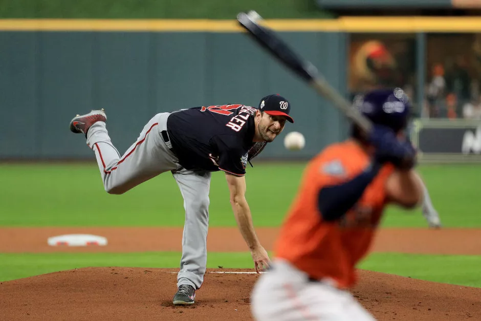

About The World of Major League Baseball
Baseball's first openly all-professional team was the Cincinnati Red Stockings, who were founded in 1869. Before that, some teams had secretly paid some players. The first few decades of professional baseball were characterized by rivalries between leagues and by players who often jumped from one team or league to another. The period before 1920 is known as the dead-ball era, during which players would rarely hit home runs. Professional baseball in the United States survived a conspiracy to fix the 1919 World Series, which came to be known as the Black Sox Scandal. The sport rose in popularity in the 1920s and survived potential downturns during the Great Depression and World War II. Shortly after the war, Jackie Robinson broke baseball's color barrier.

The 1950s and 1960s were a time of club expansion and relocation for the AL and NL. New stadiums and artificial turf surfaces began to change the game in the 1970s and 1980s. Home runs dominated the game during the 1990s, and media reports began to discuss the use of anabolic steroids among MLB players in the mid-2000s. In 2006, an investigation produced the Mitchell Report, which implicated many players in the use of performance-enhancing substances, including at least one player from each team.
Today, MLB is composed of 30 teams: 29 in the United States and 1 in Canada. Teams play 162 games each season and five teams in each league advance to a four-round postseason tournament that culminates in the World Series, a best-of-seven championship series between the two league champions that dates to 1903.
Baseball games are broadcast on television, radio, and the Internet throughout North America and in several other countries. MLB has the highest total season attendance of any sports league in the world with more than 69.6 million spectators in 2018.